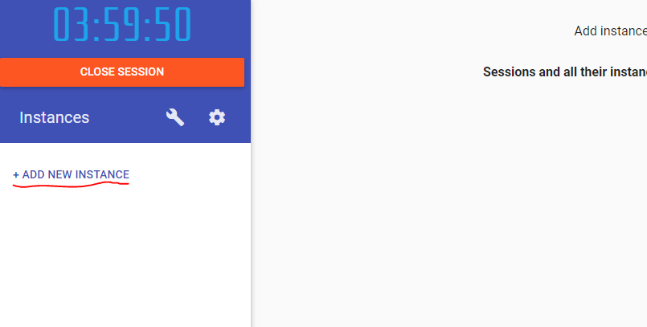
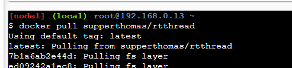
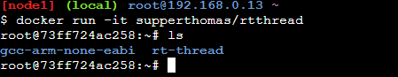
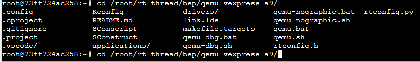
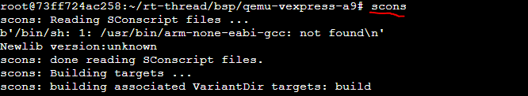
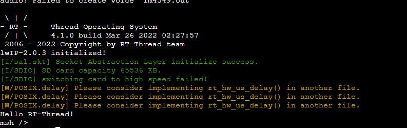

13. 如何用docker来学习rtthread-qemu
13.1. 背景介绍
相信有一些小伙伴对于搭环境来说是一件痛苦的事情，经常会遇到各种奇怪的问题
虽然文档中心对于快速上手rtthread已经讲的非常详细了：
有以下方法，我来总结一下
这篇文章主要介绍如何用docker来运行rtthread
使用docker有以下优势，
一键下载
对于linux用户或者mac用户友好
学习成本低
不过docker也同样有几大劣势：
网速较慢（需要科学上网）
github访问比较麻烦
没有图形化界面
这篇文章呢，主要让大家体验以下docker带来的方便，可能实用性不一定很高。不过相信肯定有很多docker大佬，如果对于用docker学习有什么好的意见或者建议，也可以在评论区里面帮忙留言和建议。也帮我解决一些docker的问题。
我现在觉得主要是以下几个问题：
docker 镜像下载比较慢
Dockerfile里面的代码git clone的git地址现在国内由于访问不了github无法实现自动化。
本篇文章的学习仓库
github https://github.com/supperthomas/Dockerfiles.git (欢迎star来交流)
gitee https://gitee.com/superThomas/Dockerfiles.git
13.2. 实验步骤
实验环境
小伙伴们可以在windows和linux或者mac上安装docker
https://www.docker.com/
由于有些小伙伴可能本地镜像下载比较慢，这里我找到一个比较方便的快速实验本项目的网址：
https://labs.play-with-docker.com/
这个只要注册一个账号即可（可能需要科学上网）
直接新建一个docker container

拉取镜像
输入命令docker pull supperthomas/rtthread 这个要稍微等一会，不过这里已经比本地快很多了，因为服务器是在国外

然后输入命令docker run -it supperthomas/rtthread

到这里环境就已经弄好了
qemu编译
接下来就可以根据文档中心的qemu的命令来操作了，输入命令cd /root/rt-thread/bsp/qemu-vexpress-a9/

执行命令scons

qemu 运行
输入命令./qemu-nographic.sh
然后就可以看到hello world

13.3. 总结
下面我提供几个我做的几个小一点的镜像，给需要的小伙伴pull
docker pull supperthomas/rtthread_mini:latest 这个没有gcc(非常小适合DIY)，没有arm-gcc(这个比较大)
docker pull supperthomas/rtthread_mini:v3 这个加了arm-gcc环境变量，无rtthread源码。（适合STM32 等arm-gcc环境）
docker pull supperthomas/rtthread_mini:v4 这个有gcc，加了rtthread源码自动下载。
docker pull supperthomas/rtthread_mini:v5 这个加了gcc，加了rtthread 源码，如果需要更新需要git pull
docker pull supperthomas/rtthread_mini:v6 这个在v5基础上加了qemu-system-arm 可以运行qemu
虽然看起来这篇文章比较简单，这也是我尝试了很多种复杂方法之后，总结出来的最简单的方法，希望大家感兴趣能够尝试一下，如果有什么好的建议也可以提一下。